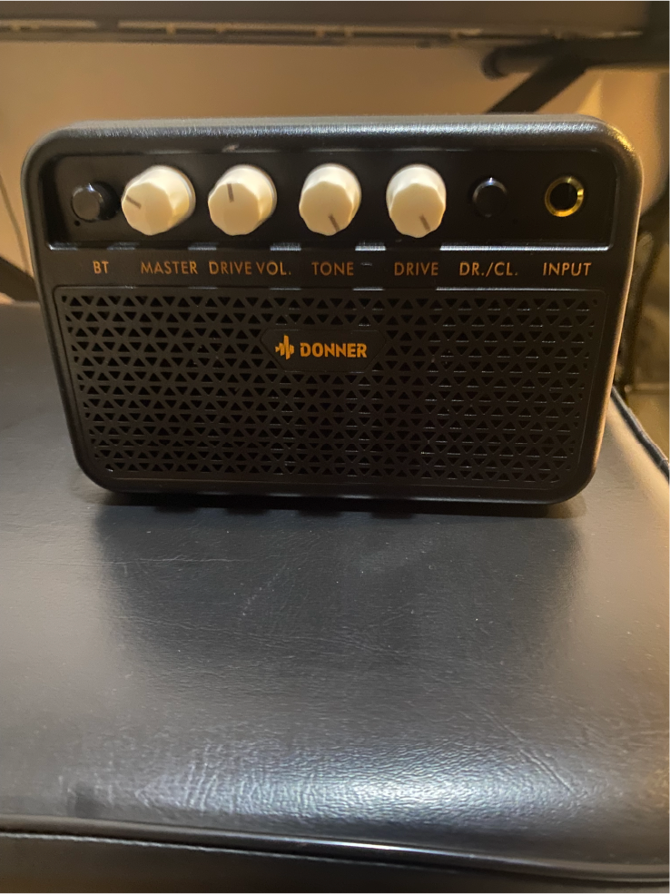
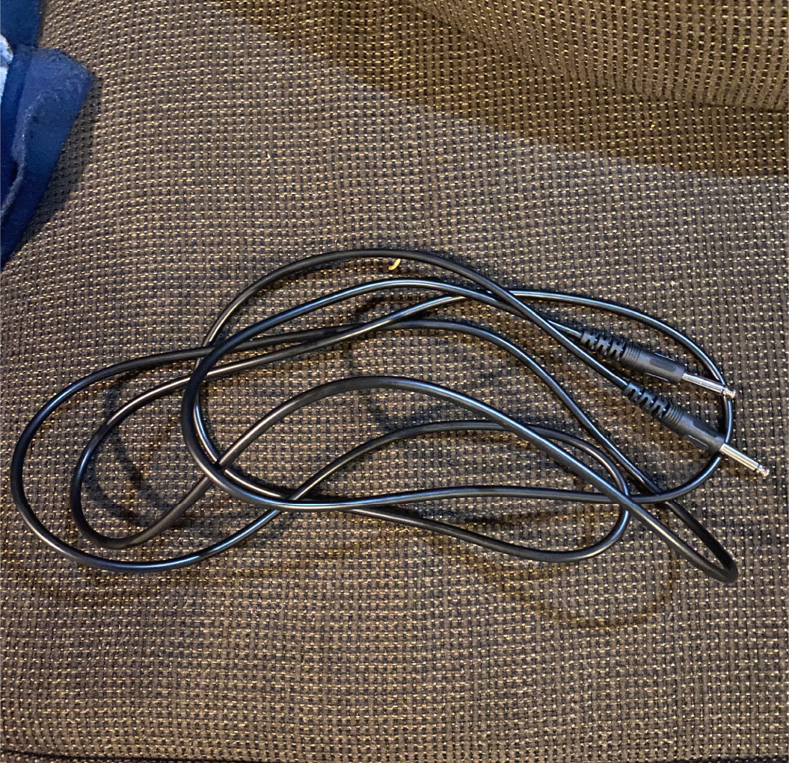

Equipment
Hey everyone! I'm Manny, and I've been hooked on rock music and electric guitar since last December. It all started with watching guitar covers of my favorite songs, which ignited a passion in me. On my 16th birthday, my parents gave me my first electric guitar, and from then on, I delved into self-teaching. Surprisingly, mastering the guitar was easier than I thought, thanks to five key steps I discovered. Now, I'm excited to share my journey to proficiency with you all.
Equipment
Here is the equipment I used to start my electric journey.

My Electric Guitar
Donner DST-100S 39 Inch Full Size Electric Guitar
Amplifier (AMP)
The Chords (To plug In the AMP)

Tuner

Guitar Picks
Step 1
Step 1
HomeAlways Tune My Guitar Before Playing it
As I embark on my electrifying journey into the world of the electric guitar, I must take a critical first step: tuning my instrument. I ensure my guitar is finely tuned to perfection before I think about strumming my first chord or riff. I grab my guitar and prepare to unleash its potential. But wait, I can't do it alone. I need AMP to tune my guitar. Together, they form the sonic landscape, allowing me to amplify my sound and explore a world of tones and textures. With my guitar and AMP ready, it's time to plug in and power up. But before I do, I take a moment to select the perfect pick, the unacknowledged hero of my musical journey. With my guitar in tune and my spirit aflame, I'm ready to ignite the stage and unleash my musical destiny upon the world.


Step 2
(These are pictures of me tuning my guitar)
Step 2
HomeDive into Guitar Tutorials
With my guitar finely tuned and my passion ignited, I'm diving into electric guitar tutorials to advance my skills. These online resources will guide me through techniques and concepts, from basic chords to advanced shredding. Armed with my guitar, AMP, and picks, I'll actively engage with the material, experimenting with styles and pushing my boundaries. Each lesson will shape me into the guitarist I aspire to be.


(Pictures of Me looking at Guitar Videos)

(A Picture of Me following along with the tutorials)
Step 3
Step 3
HomeExplore Easy Songs to Play
After tuning my guitar, I dive into guitar tutorials online. They're my roadmap to mastering the instrument, teaching essential techniques and concepts to enhance my skills. With my guitar, AMP, and picks, I explore a range of tutorials, from basic chords to advanced techniques. I engage actively, absorbing each lesson and applying it to practice. I experiment with styles, genres, and push my limits, gaining valuable skills to become the guitarist I aspire to be. One of the best websites I find to practice songs is songster.com It really helped me find easy songs that I’ll be able to play with.


(Pictures of Me Looking at Easy songs and playing them)
Step 4
Step 4
HomePractice the Song for at least 10-15 minutes
I've picked my easy songs and now it's time to commit to regular practice. I'll dedicate 10-15 minutes each day to focus on mastering them. With my guitar in hand and determination, I'll tackle each song, breaking down tricky parts, working on transitions, and refining my rhythm. Daily practice will build muscle memory and improve technique, boosting my confidence. I'll create a distraction-free practice space and fully immerse myself in the music, inching closer to mastering my songs and reaching my full potential as a guitarist.
(These are Pictures of me practicing my electric guitar)


Step 5
Step 5
HomeI record myself by either voice memos or recording playing the song
As you progress in your electric guitar journey, it's crucial to document your achievements. The final step is to utilize tools like voice memos or record yourself with your phone or iPad playing the songs you've been practicing. Whether it's a heartfelt ballad or a rocking riff, I record my version to track my development and share my music with others. Set up your recording device, ensuring clarity and quality. Don't worry about perfection! Embrace the process and let your passion shine through. Listening back to your recordings offers valuable insights into your playing. Celebrate your successes and learn from your mistakes, using each recording as a stepping stone towards mastery. With each capture, you'll document your progress and deepen your connection to the music and your instrument. That's how I taught myself to play the electric guitar!